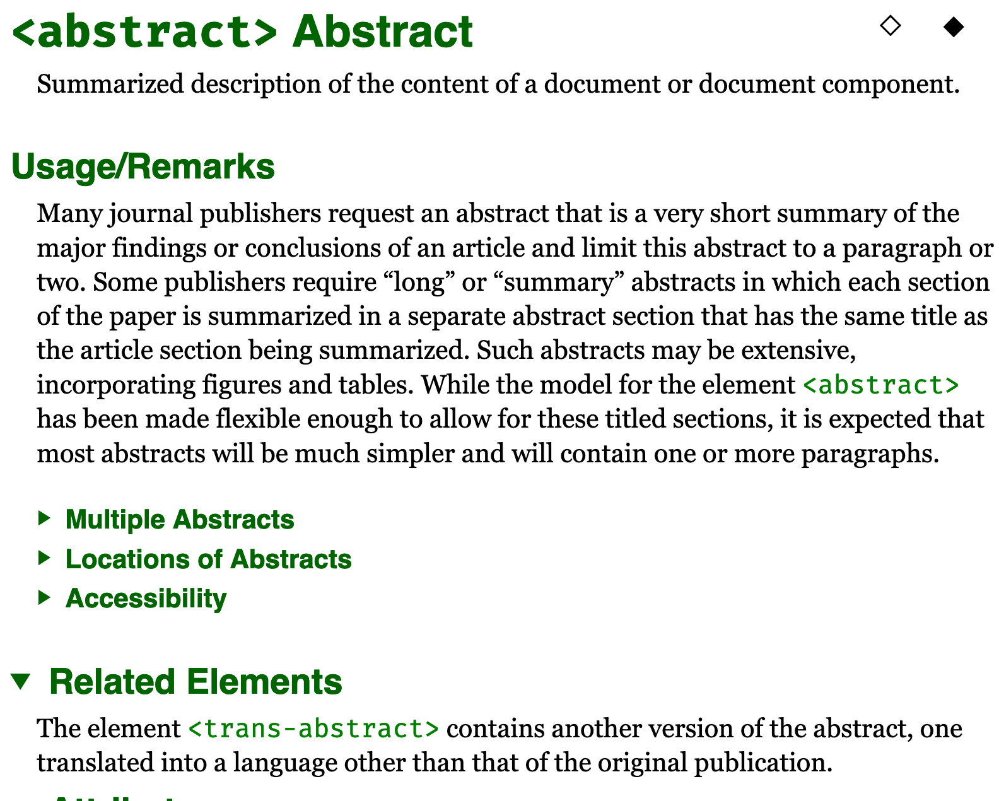
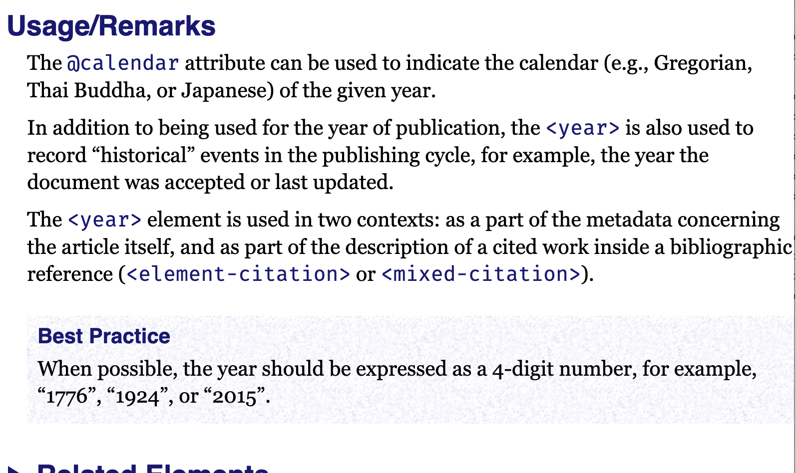
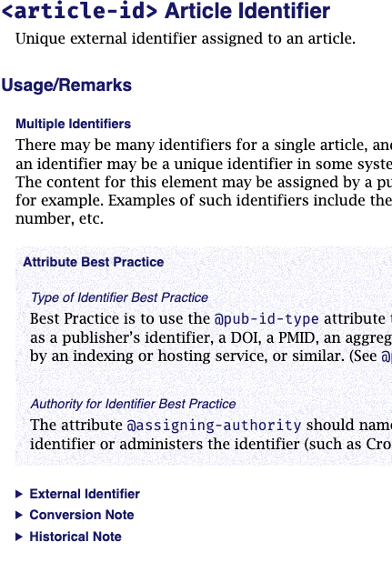

This section provides additional information about the element, explanations of similar or contrasting elements, or instructions for element usage. (See also Related Elements described below.)
Figure 6. Usage/Remarks for <abstract>
|  |
This section also contains notes, such as Historical Notes on earlier JATS versions; Conversion Notes and Technical Notes to people who are mapping between documents tagged according to this Tag Set and those tagged according to other tag sets; and Implementor‘s Notes, which are directed to people building custom tag sets.
Figure 7. Usage Remarks for <year>
|  |
Some “Usage/Remarks” sections are very complex, containing folded (collapsed) subsections, which the user will need to open to read. The “Best Practice” sections are highlighted with a light colored background, and such sections will be open (not collapsed) on opening.
Figure 8. Usage Remarks for <article-id>
|  |